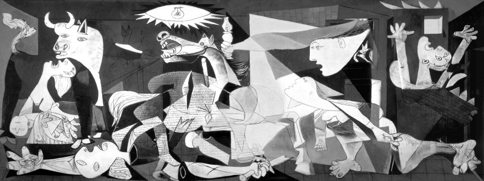

Origem
Este movimento artístico tem seu surgimento no século XX e é considerado o mais influente deste período. Com suas formas geométricas representadas, na maioria das vezes, por cubos e cilindros, a arte cubista rompeu com os padrões estéticos que primavam pela perfeição das formas na busca da imagem realista da natureza. A imagem única e fiel à natureza, tão apreciada pelos europeus desde o Renascimento, deu lugar a esta nova forma de expressão onde um único objeto pode ser visto por diferentes ângulos ao mesmo tempo.
Fases do Cubismo:
- Cubismo cézanniano (entre os anos de 1907 e 1909) - é a fase que dá início ao Cubismo. Período marcado pela forte presença das obras de Paul Cézanne.
- Cubismo Analítico (entre os anos de 1910 e 1912) - fase marcada pela união dos trabalhos criados separadamente por Picasso e Braque.
- Cubismo Sintético (entre os anos de 1913 e 1914) - fase marcada pelo uso de formas decorativas e cores marcantes.
Cubismo no Brasil
Somente após a Semana de Arte Moderna de 1922 o movimento cubista ganhou terreno no Brasil. Mesmo assim, não encontramos artistas com características exclusivamente cubistas em nosso país. Muitos pintores brasileiros foram influenciados pelo movimento e apresentaram características do cubismo em suas obras. Neste sentido, podemos citar os seguintes artistas: Tarsila do Amaral, Anita Malfatti, Rêgo Monteiro e Di Cavalcanti.
Questões do enem
Questão 1
O pintor espanhol Pablo Picasso (1881–1973), um dos mais valorizados no mundo artístico, tanto em termos financeiros quanto históricos, criou a obra Guernica em protesto ao ataque aéreo à pequena cidade basca de mesmo nome. A obra, feita para integrar o Salão Internacional de Artes Plásticas de Paris, percorreu toda a Europa, chegando aos EUA e instalando-se no MoMA, de onde sairia apenas em 1981. Essa obra cubista apre - senta elementos plásticos identificados pelo
A) painel ideográfico, monocromático, que enfoca várias dimensões de um evento, renunciando à realidade, colocando-se em plano frontal ao espectador.
B) horror da guerra de forma fotográfica, com o uso da perspectiva clássica, envolvendo o espectador nesse exemplo brutal de crueldade do ser humano.
C) uso das formas geométricas no mesmo plano, sem emoção e expressão, despreocupado com o volume, a perspectiva e a sensação escultórica.
D) esfacelamento dos objetos abordados na mesma narrativa, minimizando a dor humana a serviço da objetividade, observada pelo uso do claro-escuro.
E) uso de vários ícones que representam personagens fragmentados bidimensionalmente, de forma fotográfica livre de sentimentalismo.
Questão 2
O quadro Les Demoiselles d’Avignon (1907), de Pablo Picasso, representa o rompimento com a estética clássica e a revolução da arte no início do século XX. Essa nova tendência se caracteriza pela
A) pintura de modelos em planos irregulares.
B) mulher como temática central da obra.
C) cena representada por vários modelos.
D) oposição entre tons claros e escuros.
E) nudez explorada como objeto de arte.
Algumas obras
Pablo Picasso le demoiselles d'avignon
Pablo Picasso Guernica (1937)
